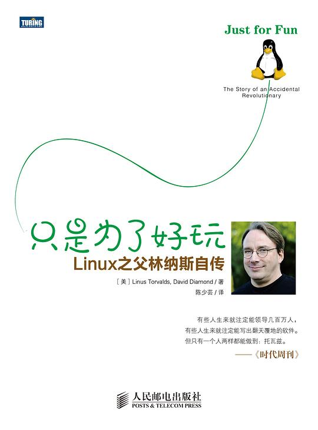

|  |
只是为了好玩：Linux之父林纳斯自传 |
序言 生活的意义之一（性、战争和Linux系统）
有三件事具有生命的意义。它们是你生活当中所有事情的动机，包括你所做的任何事情和一个生命体该做的所有事情。第一是生存，第二是社会秩序，第三是娱乐。生活中所有的事情都是按这个顺序发展的。娱乐之后便一无所的。因此从某种意义上说，这意味着生活的意义就是要达到第三个阶段。你一旦达到了第三个阶段，就算成功了。但首先要越过前两个阶段。
林纳斯：我们还是来谈谈战争吧。很明显，它最初起源于生存，因为在你和水源之间有一个高个子家伙挡道。再后来，你必须和那个家伙为争夺一个妻子而搏斗。之后，就成了一种社会秩序。中世纪之前很长一段时间里战争就是这个样子。
大卫：战争是建立社会秩序的手段。
林纳斯：没错。但它也是把人自己塑造成社会秩序中一部分的手段
大卫：如今战争已成为娱乐？
林纳斯：对。
大卫：也许那些在电视上观看战争节目的人，会觉得战争非常有意思。
一个怪胎的诞生
大鼻子的孩子
外公的计算机
我外公列奥·瓦尔德马·托尔奎斯特(Leo Waldemar Tornqvist)是赫尔辛基大学的一位统计学教授。
芬兰的严冬
我也用我的零花钱购买电脑杂志，其中有一本写着关于莫尔斯电码(Morse Code)的程序。而这个特殊程序的特别之处在于，它并非用BASIC语言写成，而是由一组数字写成，这些数字可以用手工方式将其转变为计算机可以读懂的许多0和1。
这样，我便发现了电子计算机并非真的讲BASIC语言，它所赖以操作的是一种更加简单的语言。赫尔辛基的孩子们都和他们的父母在树林子里玩曲棍球和滑雪，而我却在琢磨一台电脑在怎样工作。当时有一些程序，能把人们可读和数码转换成电脑看得懂的0和1，但我并不晓得有这样的程序，于是我就开始用数字形式编写程序，然后再用手工进行转换。这就是用机器语言编程序，这样做时，我便开始做起了我过去以为是完全不可能的事情。我已经能够驱使电脑做事情，对一切细节我都能够加以控制。我开始思索，如何能在更小的空间里让事情做得更快一些。由于在我和电脑之间没有抽象的屏障，我很快地就能接受目标，这便是和一台机器变得亲密的感受。
我外祖父在把电脑介绍给我的四年后，得了脑血栓并且半身不遂。每个人对此都感到很吃惊。他在医院里躺了一年。虽然他是我最亲的人，但在当时对我的影响并不太大，或许是我还太年轻而不那么敏感的缘故。他的样子和从前已经判若两人，我并不想去看他。只是大约每隔两个星期看他一次。倒是妈妈去得很频繁。妹妹很早的时候就担当起了家庭社会工作者的角色，所以去得更频繁。
我的家族
我外祖父的父亲住在瓦萨城附近的一个叫杰波的小镇上，是个相当贫困的农场言，但他的六个儿子中有五个获得了博士学位。这很难说明在芬兰通过努力以改善自己境遇的可能性。不错，冬天的黑暗以及走进屋里后就把鞋子脱掉的做法的确让你心烦。然而在那里你可以免费受到大学教育。这一点和美国的情况大相径庭，美国的许多孩子在成长过程中都有一种毫无前途的感觉。事实上，上面提到的六个儿子之一后来当上了芬兰中央银行的行长。还有一个就是我外祖父列奥，也就是带我接触到计算机的那一位。
有时我们和爸爸还有他的女朋友住在一起，有时萨拉和爸爸住在一起，而我和妈妈住在一起。还有的时候我们都和妈妈住在一起。顺便说一句，瑞典语中找不到一个与“机能障碍家庭”相对应的词汇。由于我父母的离婚，我们手头很拮据。当时我记得最清楚的是，我妈妈不得不经常典押她唯一的投资——无度电话公司的股票。在芬兰，只要你拥有一部电话就能拥有一张该公司的股票。我妈妈的股票大约值五百美元，每当我们手头特别缺钱花时，她就只好拿着股票到当铺去。我记得曾和妈妈去典押过一次，心里感到非常窘迫(如今我是这家公司的董事会成员。事实上，赫尔辛基电话公司是我任董事会成员的唯一一家公司)。类似的心理感受也发生在我要为购买第一块手表而向外公讨钱的时候，当时我自己已攒下了大部分的钱，但剩下的钱妈妈却拿不出来，于是让我向外公讨要，这让我感到非常难堪。
1999年春天——大卫的话
林纳斯已经在两年前来到了硅谷，正在为当时还显得特别神秘的Transmeta公司工作，那家公司多年来一直致力于开发一种据说成功后将轰动整个电脑工业的微处理器。但是，不知何故，Transmeta公司却允许林纳斯继续他那项耗时甚多的工作，他仍旧是Linux的最高领袖，对这个操作系统的任何修改拥有最终的决定权(事实上，他的追随者已经在着手进行法律方面的工作，以期在法律上让他成为Linux商标的所有者)。此外，他还有时间在全球四处旅游，为方兴未艾的公开源代码运动大做宣传。
中学时代
长大成人
在芬兰你有两种选择：要么在部队服八个月的兵役，要么从事一年的社会服务工作。你要是有很强烈的宗教原因或其他说得过去的理由，这两样你还都可以避开。对我来说却没有任何脱身之计。对于社会，我觉得那并非是一个合适的选择。
要是你选择服兵役，也会有两种选择：你可以当一个普通大兵，服满要求的八个月；或者去一所军官培训学校，当十一个月的军官。我觉得当一名军官可能会稍微有点意思，虽然你的服兵役时间要多出十二万九千六百分钟。当军官或许也能多学到一点东西。
于是乎你们那位当时体重是一百二十磅的英雄就成了芬兰陆军预备役中的一名少尉。干的事是火力控制。那还不是火箭科学，发给你的也不是大炮，而是坐标。你在地图上找出自己的位置，然后用三角学求出你想要射击的方位。你做出坐标计算，然后把结果用无线电或你们自己铺设的电话线传递出去，告诉要朝哪里射击。
我说没说过拉普兰能冷到什么程度？现在想起来，当时在那里时，我真的讨厌那个地方。然而事情就是这样，当一切都结束后，它很快就变成一段非常美好的回忆了。
爱洗桑拿的国家
既然聊到我们的国家，就让我再告诉你一些芬兰的情况。我们拥有的驯鹿是最多的，恐怕世界上任何地方的都多不过我们。喝酒的人和跳探戈舞的人也不在少数。只要你在芬兰呆上一个冬天，就会明白喝酒的原因。对探戈舞的着迷我却找不出原因，但幸好舞迷们大都集中在小镇里，你永远也见不到他们。
芬兰人还有许多其他的特性，与世界其他地方的人们不同。比如他们有沉默的传统。人人都沉默寡言。他们常常站在一起，但一句话也不说。这种做法在我们家也不流行，所以我善意地把我的家人称做“非常规类型”。芬兰人凡事还毫无怨怼。我们之所以能够熬过俄国的统治、熬过一系列的血腥的战争和压抑的天气，完全是因为可以在沉默中忍受痛苦并有着坚定的决心。
既然芬兰人不喜欢面对面地交谈，整个国家就成了移动电话最理想的市场。我们对这种新玩意如醉如痴，任何国家都望尘莫及。按照平均人口计算，哪一个国家拥有最多的驯鹿我不清楚，细想起来可能是挪威，但是世界上每一个男人、女人和孩子拥有最多手机的国家是哪一个却是不言自明的。人们甚至还说芬兰人一生下来就应该把手机移植到他们的身体上。
手机在芬兰受到如此热情的接纳其实也无须惊讶。这个国家在采纳新技术方面一贯迅速和信心十足。芬兰和世界其他地方不一样，这里的人喜欢通过电子银行支持各种费用和开展业务，而这种所谓的发出微弱之声的“手机银行”在美国却鲜为人知。与其他国家相比，芬兰平均上网的人数最多。有人把这种对技术的精通归咎于强大的增长率体系——芬兰人的文化水准在世界上排名第一，大学也不收学费，所以学生们经常在大学里逗留六到七年。比如我就呆了八年。一个人将生活中如此多的时间泡在大学里，不可能什么都学不到。也有人说芬兰人对技术的喜欢源于对俄国的战争赔款，为了赔款而发展了航运业，因此改善了基础设施。还有人将此照片于芬兰是个同性恋的国家的事实(曾经一度确是如此，令人不能容忍)。不管出于什么理由，芬兰是一系列技术革新的发源地。比如有声电影的发明就在芬兰。哦，对了，还有Linux操作系统。
一个操作系统的诞生
昨天的电脑
我成长期间只有过三台电脑。上面提到过的Commodore VIC-20，是我外祖父留给我的遗产。它是“家用”电脑中的一种，是当今PC机的前身。后来Commodore 64 电脑成了VIC-20的老大哥，接踵而至的是Amiga，这种机器在欧洲特别受欢迎。这些电脑从来未像PC机甚至苹果II那样流行过，我在玩VIC的时候，苹果II已经很流行了。
我选择的是Sinclair QL，你们当中的许多人大概太年轻，对这种机子没有记忆。下面是QL的简单历史：当时，Sinclair是市场上32比特的机器之一，主要用于家庭。那家公司的创始人*克里夫·辛克莱尔(Clive Sinclair)*在英国等同于史蒂夫·沃斯尼亚克(Steve Wosniak)。他制作出这些电脑的配套元件，然后以Timex的品牌在美国销售。没错，一家制造钟表的公司进口Sinclair的元件，然后再打着Times品牌在这里卖出。早期销售的也是配套元件，他后来开始销售组装好的机器。
Sinclair的操作系统叫做Q-DOS。这种操作系统是专门为那种电脑写的。按照当时的情况，它的BASIC语言非常先进，而且有着不错的图形显示。那种操作系统最令我兴奋的一个特点是它能进行多重任务处理。你可以同时操作多个程序。然而其BASIC部分却不是多重任务处理，所以同一时间之内你不能操作超过一个以上的BASIC程序。但如果你用汇编语言编写自己的程序，就能让操作系统列出时间表，把时间分隔开来，这样你就可以在同一时间操作多个程序。
这种电脑有一个8兆赫的68008芯片，它是摩托罗拉68000芯片的第二代，是个更加便宜的版本。在内部，第一代68000芯片是32比特，但在外部，却以16比特与CPU之外的设备进行连接，例如存储器和硬件附加装置。由于它只能在一个时间内从存储器上载16比特，因此16比特的操作常常比32比特的操作要快。这种结构非常受欢迎，今天在许多嵌入装置和轿车里仍然有人使用。虽然芯片已经不同，但却是基于相同的结构生产的。
于是我花两千美元买了一台Sinclair QL。我用它所做的就是不断地编写程序。我总是在寻找有意思的事情做。我有一个Forth语言解释程序和编译程序，纯粹是为了用着玩。Forth是一种很怪的语言，现在已经没有人使用。它是一种挺好玩而且在市场上有利可图的语言，因为可以做许多事情而在八十年代被广泛运用，但从来没有特别普及过。它对不懂技术的人来说非常难于掌握。其实这种语言也没有什么太大用处。
使我对系统感兴趣的是，我买了一个软盘控制器，因为已不必再使用微型驱动器了。但软盘驱动器上的驱动程序不好使，于是我自己又写了一个。在编写过程中，我在操作系统里发现了一些病毒。我之所以能发现病毒，是因为我编写的一些东西无法操作。我的编码总是很完美的，所以我知道肯定是别的地方出了差错。于是我把整个操作系统都卸掉了。
你可以列出一推关于操作系统的书籍，这些书能帮上忙。你还需要一个反汇编程序，这种工具能把机器语言变成汇编语言。这一点非常重要，因为你要是只有机器语言的版本，执行指令时就非常困难。你会发现一个指令跳到一个数字的地址，读起来非常困难。一个好的反汇编程序可以为数字起名字，也可以让你起名字。你还可以使用它帮助你寻找特殊的相关指令。我自己有一个反汇编程序，可以用它创立相当不错的目录。一旦出现差错，我就可以进入反汇编程序，让它从特殊的地点找出目录，而且我还能看到操作系统将要执行的任何任务。
有时我使用反汇编程序并非是因为出了故障，而是想弄明白它到底能做些什么。
QL令我讨厌的一个地方是，它只有一个只读操作系统，对于一切都无法改变。它在某些地方的确有HOOKS(是一种消息处理机制，它使程序员可以使用子过程来监视系统消息，并在消息达到目标过程前得到处理--译注)。HOOKS就是你能切入你自己的编码接管某些功能的地方。但HOOKS只出现在某些特定的地方。要是能完全替换你的操作系统就会好得多。在只读存储器中运行一个操作系统是一种非常糟糕的想法。
新的汇编程序和编辑器都不错，但是它们是在微型驱动器上，无法放入EEPROM。于是我自己编写了汇编程序和编辑器，应用于我所有的编程之中。编辑器和汇编程序都是用汇编语言写的，按照今天的标准看上去非常愚笨。这种语言又复杂又费时，我想用汇编语言解决一个问题要比用C语言解决一个问题多出一百倍的时间，而当时C语言已经存在了。
语言轻快有趣，讲到的一些历史故事很有意思。
书的前面有“Linux发展编年表”没有整理进笔记，如有需要，可查看原书。